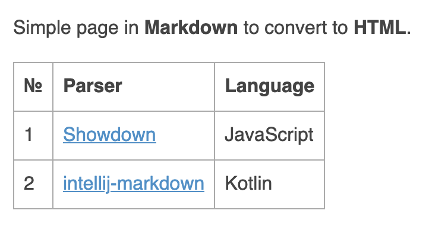

PSKOV 2 for JVM
2025-02-11 00:00

Seperate pages' generation
In January I implemented half of the functionality of original PSKOV: generation of separate HTML pages from Markdown.
Both PSKOV 1 and PSKOV 2 produce HTML files that look the same in web browsers. However, the contents of the generated HTML files differ because PSKOV 1 uses Showdown to convert Markdown to HTML, whereas PSKOV 2 uses intellij-markdown.
Let's see how the generated HTML files compare. Suppose we have the following page in Markdown:
Simple page in **Markdown** to convert to **HTML**.
| № | Parser | Language |
|---|--- |--- |
| 1 | [Showdown][showdown] | JavaScript |
| 2 | [intellij-markdown][intellij-markdown] | Kotlin |
[intellij-markdown]: https://github.com/JetBrains/markdown
[showdown]: https://github.com/showdownjs/showdown
PSKOV 1 converts the aforementioned Markdown to the following HTML:
<p>Simple page in <strong>Markdown</strong> to convert to <strong>HTML</strong>.</p>
<table>
<thead>
<tr>
<th>№</th>
<th>Parser</th>
<th>Language</th>
</tr>
</thead>
<tbody>
<tr>
<td>1</td>
<td><a href="https://github.com/showdownjs/showdown">Showdown</a></td>
<td>JavaScript</td>
</tr>
<tr>
<td>2</td>
<td><a href="https://github.com/JetBrains/markdown">intellij-markdown</a></td>
<td>Kotlin</td>
</tr>
</tbody>
</table>
PSKOV 2:
<body><p>Simple page in <strong>Markdown</strong> to convert to <strong>HTML</strong>.</p><table><thead><tr><th>№</th><th>Parser</th><th>Language</th></tr></thead><tbody><tr><td>1</td><td><a href="https://github.com/showdownjs/showdown">Showdown</a></td><td>JavaScript</td></tr><tr class="intellij-row-even"><td>2</td><td><a href="https://github.com/JetBrains/markdown">intellij-markdown</a></td><td>Kotlin</td></tr></tbody></table></body>
Here's how both HTML files are rendered in web browsers:

Thus, we have identical rendering of different files. My internal perfectionist is outraged by such a disrepancy. However, my internal pragmatist thinks this hardly deserves such an attention.
February
In February I'm going to update the cross-language dialect's translator to produce Context.